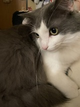

Introduction
Here is one of my favorite animals:
Cats
I am very fond of Ragdoll cats! They are a charming and gentle breed of cat. Ragdoll cats get their name from their unique breed trait of becoming very soft when picked up or moved, just like a Muppet. They are large in size and have gorgeous long fur and beautiful blue eyes. Ragdoll cats have very gentle and calm personalities. They are usually friendly, love to interact with people, and tend to be part of the family. Ragdoll cats develop deep emotional bonds with people, enjoy the company of their owners and do not like to be alone.

Interesting Facts
- Fact 1: Ragdoll cats get their name from their tendency to go limp when picked up.
- Fact 2: They are a relatively new breed, originating in the 1960s.
- Fact 3: Ragdolls are generally larger and heavier than most domestic cat breeds.